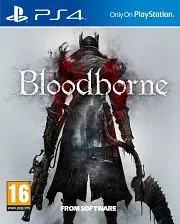
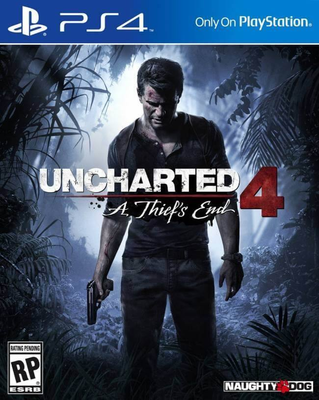

Juegos

Bloodborne (2015), desarrollado por FromSoftware, es un RPG de acción exclusivo de Play Station 4
, que sumerge a los jugadores en la ciudad maldita de Yharnam, donde monstruos y horrores cósmicos acechan al jugador en cada esuina. Su combate rápido y agresivo,
junto con una historia críptica y una atmósfera opresiva, lo convirtieron en un clásico de culto dentro del género Souls-like.
Enlace a la tienda Oficial de Play Station: Bloodborne

Uncharted 4: A Thief’s End (2016) es la épica conclusión de la saga de Nathan Drake, desarrollada por Naughty Dog, disponibLe en Play Station 4
y PC. En esta entrega, el cazatesoros se embarca en una última aventura junto a su hermano Sam en busca del legendario tesoro del pirata Henry Avery. Con gráficos impresionantes, un guion cinematográfico
y mecánicas de exploración y combate mejoradas, el juego ofrece una experiencia envolvente que combina acción, drama y espectaculares escenarios. Su historia emotiva
y su jugabilidad refinada lo convierten en uno de los títulos más aclamados de la PlayStation 4.
Enlace a la tienda Oficial de Play Station: Uncharted 4: A Thief’s End